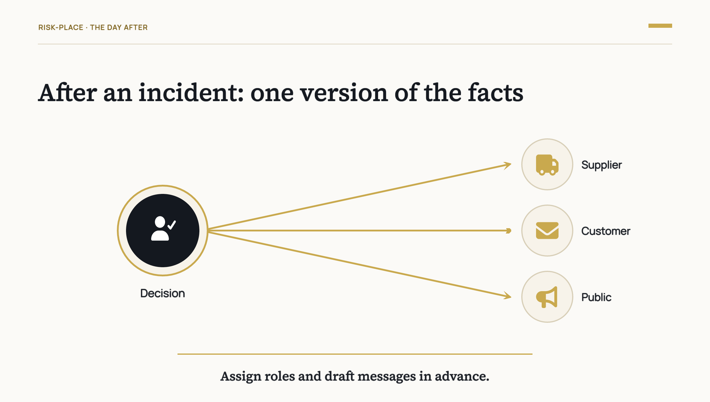

The morning after a strike rarely provides a complete picture. Damage is still being assessed, suppliers are calling, customers need a date and employees are exchanging different versions in messaging apps. This is when one record of confirmed facts and a consistent company voice matter most.

The first hour: record what is known
Start with a short record: what happened, which area or flow has stopped, whether people are at risk and when the next assessment will take place. Do not fill gaps with assumptions. Until the cause is confirmed, it stays out of the official statement.
This record needs one owner. They gather confirmations from the site, security, IT and business leads, then maintain a shared timeline. Decisions are based on the same data instead of the loudest version in a chat.
One person decides, another confirms the date
Assign authority in advance. The site director or deputy stops work. The contract owner confirms a new customer date. One spokesperson handles external requests. Every role needs a deputy who knows the task and has taken part in a rehearsal.
- The decision to stop is recorded with a time and a name.
- Only a person with confirmation from the site announces a new date.
- External comments use the shared record of facts.
- The next update is scheduled for a specific hour, even when answers are still limited.
One logic for suppliers, customers and the public
A supplier needs to know whether to hold a delivery, change the route or postpone a movement. A customer needs a confirmed date and volume. The public needs a brief statement of what is known, how operations are affected and when further information will arrive.
The level of detail differs, while the facts remain consistent. Do not promise full shipping until the site confirms it. Do not name a culprit before competent specialists confirm one. Promise a time for the next update and honour that commitment.
Drafts reduce the pressure
Prepare short templates in advance: an internal notice, a supplier letter, a customer letter and a public response. Leave fields for the facts, the next update and the responsible contact. On the day, the team only needs to fill them with verified information.
A drone strike readiness check tests these roles and messages against a realistic scenario. It shows who can actually stop output, which date can be promised and where the decision chain loses time.
Frequently asked questions
Report only confirmed facts: what has stopped, how operations are affected and when the next update will arrive. Do not name causes or culprits before confirmation.
As soon as an impact on their delivery is confirmed. Give a new date only after the site confirms it, and state when the next contact will take place.
A spokesperson and deputy named in advance. They use the shared timeline and avoid adding their own assumptions.
Is your team ready for the first hour of a crisis?
You test a plan by running a scenario. Reading it is not enough. The assessment shows the gaps, and the corporate format works through them with your team on your own processes.